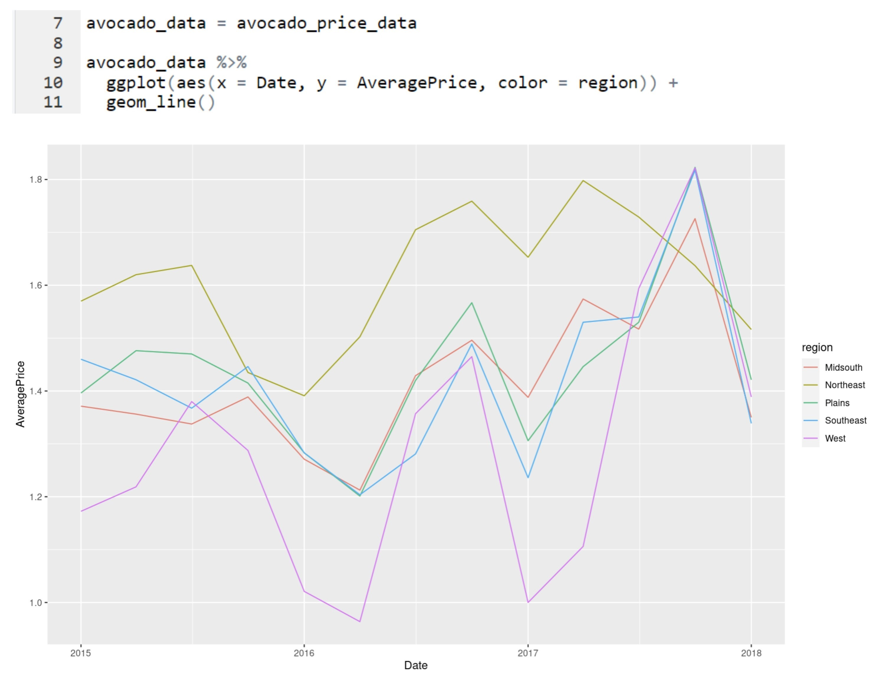
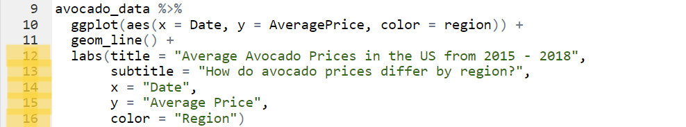
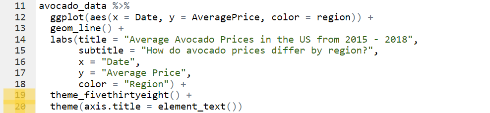
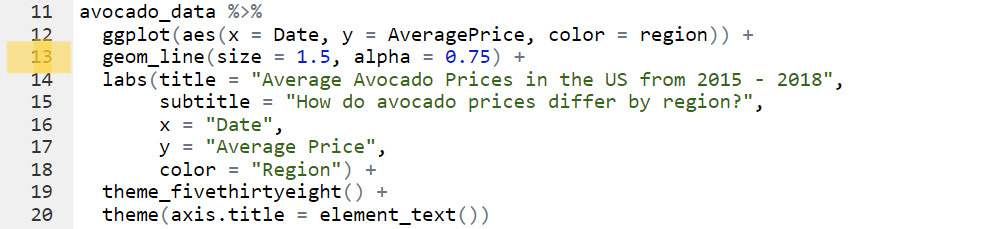
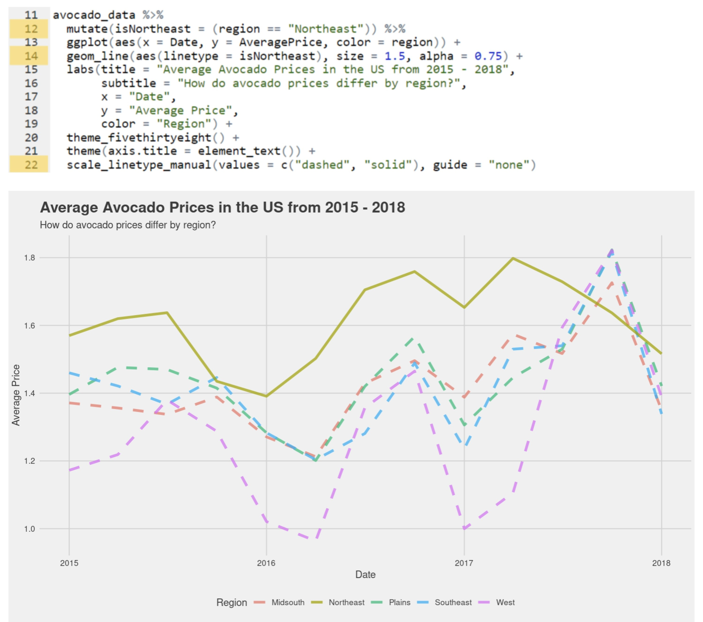
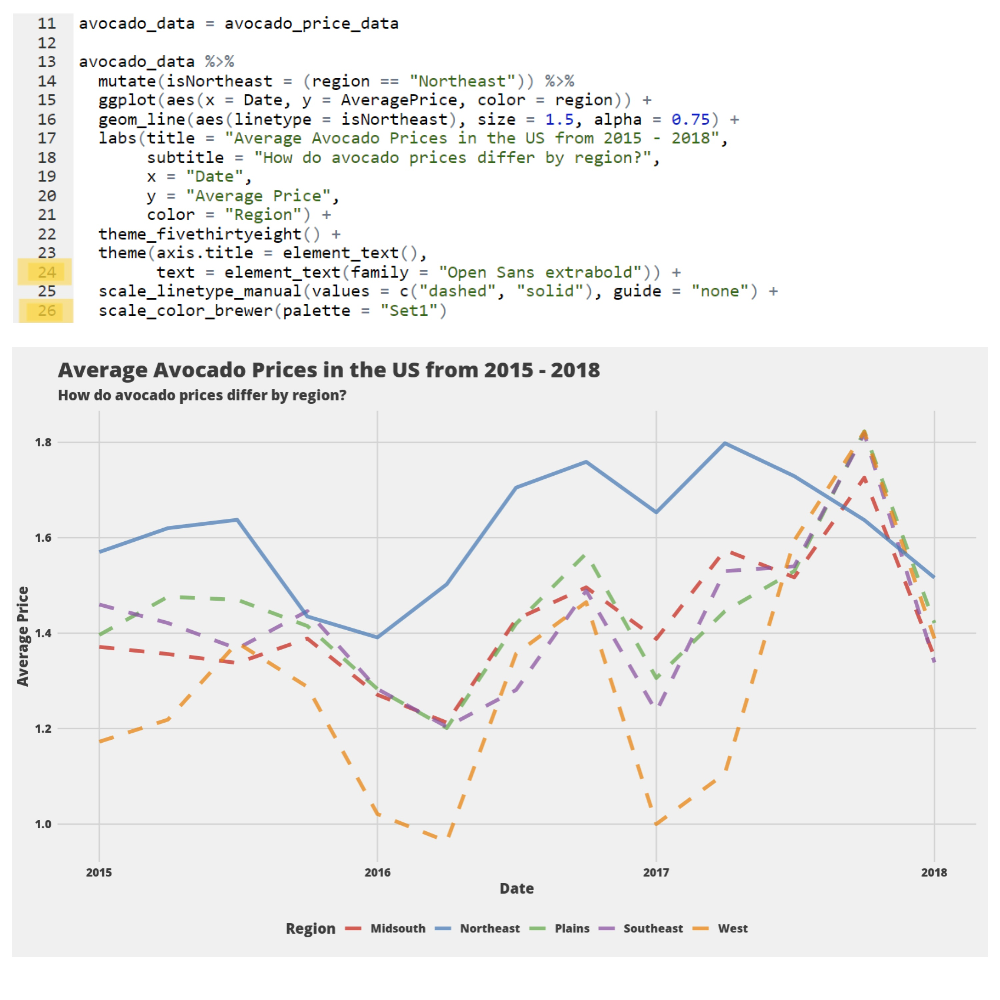
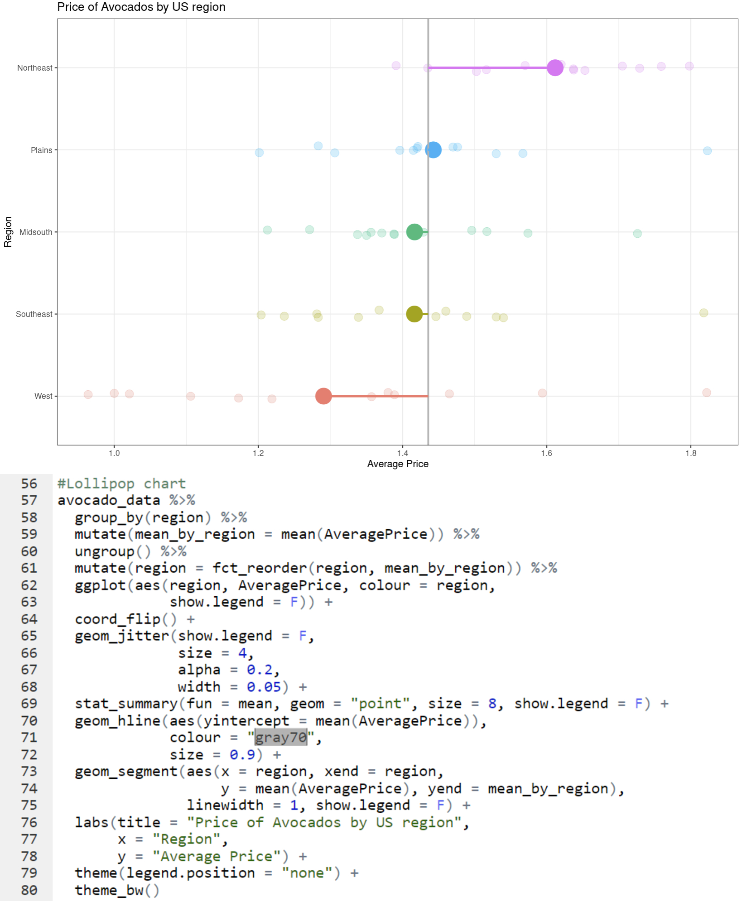

Project Overview
In this project, I analyzed the average price of avocados across different regions in the U.S. from 2015 to 2018, using R Programming to iteratively build and refine data visualizations with ggplot2.
Initial Line Graph
After loading the dataset into R, I created a basic line graph using ggplot. The Date and Average Price are assigned to the axes, with line colors representing each U.S. region.

While functional, this default graph is quite plain. To make it more insightful, I enhanced it by adding descriptive titles, applying themes, modifying line aesthetics, and highlighting key regional data.
Iterative Improvements in R
1. Adding Titles & Formatting Labels: Used labs() to define a clear title, subtitle, axis labels, and legend titles.

2. Applying Themes: Applied the fivethirtyeight theme from ggthemes to simplify gridlines and shift the legend to the bottom, then restored missing axis titles with element_text().

3. Line Thickness & Opacity: Increased line size to 1.5 and set alpha to 0.75 for improved readability.

4. Highlighting Key Regional Trends: To emphasize the Northeast region (which consistently recorded the highest average price), I used dplyr's mutate() function to create a conditional flag—keeping the Northeast line solid while setting all other regional lines to dashed.

5. Final Aesthetics & Typography: Finalized the design with customized color palettes and fonts.

Key Findings & Analysis
- Regional Price Disparities: As visualized in the 5-region line chart, the Northeast (solid blue line) consistently maintained the highest average price per unit across the entire timeframe, peaking near $1.80 in late 2017[cite: 12]. Conversely, the West (dashed orange line) recorded the lowest overall prices, dipping under $1.00 in early 2016 and 2017[cite: 12].
- Supply Chain & Logistics Impact: This gap is largely driven by U.S. reliance on Mexican imports (1.3M metric tons imported vs. 156k metric tons produced domestically in 2022). Proximity to Mexican borders and local California production keeps West Coast transportation and freight costs substantially lower than in the Northeast.
- Market Shocks & Price Peaks:
- Late 2016 Strike Peak: A sudden price spike across all regions occurred in October 2016 due to producers striking in Mexico, tripling wholesale prices in certain U.S. cities[cite: 12].
- Late 2017 Yield Deficit: Lower harvest yields in both Mexico and California during 2017 drove a second sharp surge where all regions briefly converged near peak price levels[cite: 12].
Additional Visualization: Regional Lollipop Chart
I also built a lollipop chart to display the overall average price by region relative to the overall national average (vertical reference line at approximately $1.43)[cite: 13].
Using dplyr's mutate() and tidyverse's fct_reorder(), I calculated regional averages and ordered them sequentially[cite: 13]. The Northeast sits furthest to the right of the national mean line, while the West sits furthest to the left[cite: 13]. I plotted the initial axes, flipped them using coord_flip(), added slight jittering with geom_jitter(), and constructed the lollipop stems using geom_hline() and geom_segment()[cite: 13].

Key Takeaways & R Skills Used
- Applying and customizing pre-built themes in
ggplot2/ggthemes. - Utilizing
dplyrlogic to conditionally format line types (solid vs. dashed). - Designing custom lollipop charts with
geom_segment(),geom_hline(), andcoord_flip().